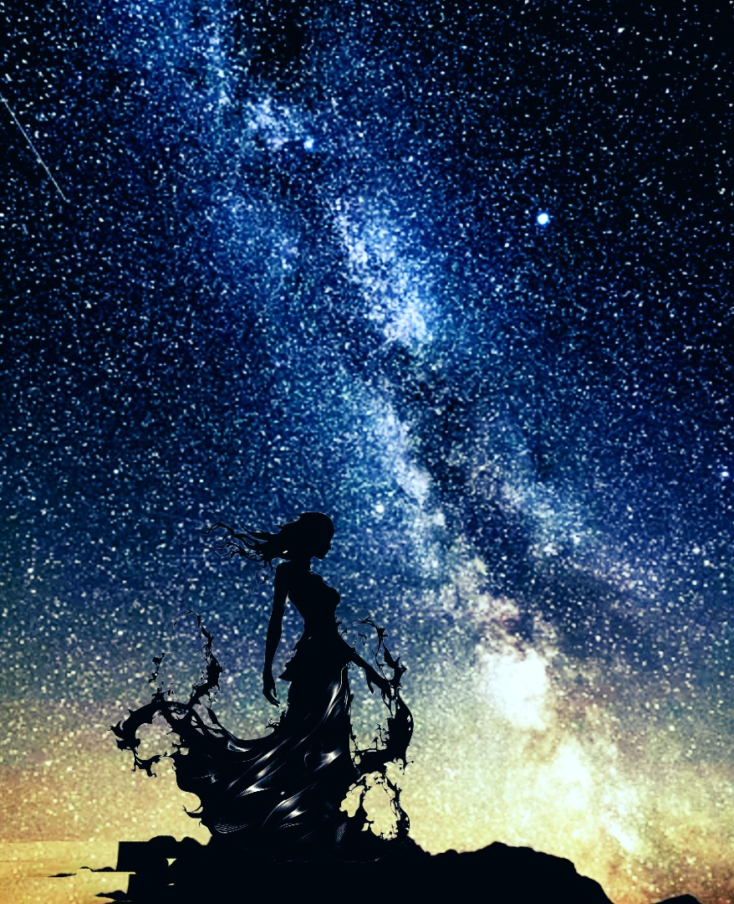

The Quest for You
Some people enter our lives for only a brief moment, yet leave footprints that time can never erase. These poems were inspired by one such soul—known here only as M, my shining Vega star. They are not merely poems about love, but about chance encounters, unspoken feelings, missed opportunities, memory, hope, and the enduring search for someone who changed the course of a heart. This collection follows the journey from a quiet meeting in a university chemistry lab to years of longing and reflection. While the emotions are deeply personal, the stories belong to anyone who has ever loved someone they could not forget. The identity of the person who inspired these poems remains private. What matters is not who he is, but what his presence awakened, a love that became poetry. May these verses remind you that some stars remain distant, yet their light continues to guide us long after they have disappeared from our sky.
🎵 "Lost Love" — The Mountain (Pixabay Music)
